“Brincar é a maneira favorita do
nosso cérebro aprender.” - Diane Ackerman
Nina é um aplicativo gamificado de aprendizado de LIBRAS para pessoas ouvintes.
A proposta é criar condições para que o aprendizado vire hábito. Com pesquisa real, processo completo e
protótipo interativo, o projeto nasceu como Trabalho de Conclusão de Curso de Bacharelado em Design da
Universidade Federal de Uberlândia.
Nina é um app gamificado de LIBRAS para ouvintes, criado como TCC de Design na UFU.
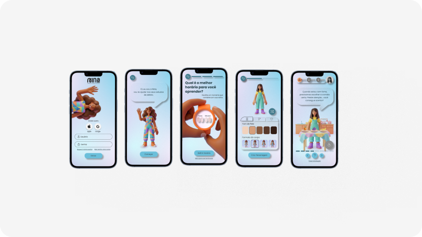
A Língua Brasileira de Sinais (LIBRAS) foi oficializada por lei, mas a comunicação entre surdos e ouvintes ainda enfrenta barreiras. Isso limita o acesso a serviços básicos, gera isolamento da comunidade surda e dependência de intérpretes em situações simples. A pesquisa realizada mostrou que o interesse dos ouvintes em aprender LIBRAS existe. O que falta é uma forma de aprendizado possível de manter. A LIBRAS é lei, mas a comunicação com surdos ainda depende de improviso, falta um jeito de aprender que dê pra manter.
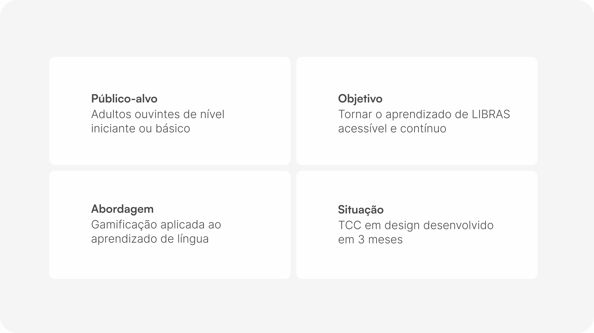
O Double Diamond estrutura o processo,
o Design Thinking orienta a condução.
Double Diamond no processo, Design Thinking na condução.
O processo seguiu o Double Diamond como estrutura, organizado em quatro etapas que alternam momentos de divergência e convergência: Descobrir, Definir, Desenvolver e Entregar. Dentro dessa estrutura, foi adotado o Design Thinking, com foco centrado no usuário e nas necessidades humanas. O processo seguiu o Double Diamond, guiado pelo Design Thinking centrado no usuário.
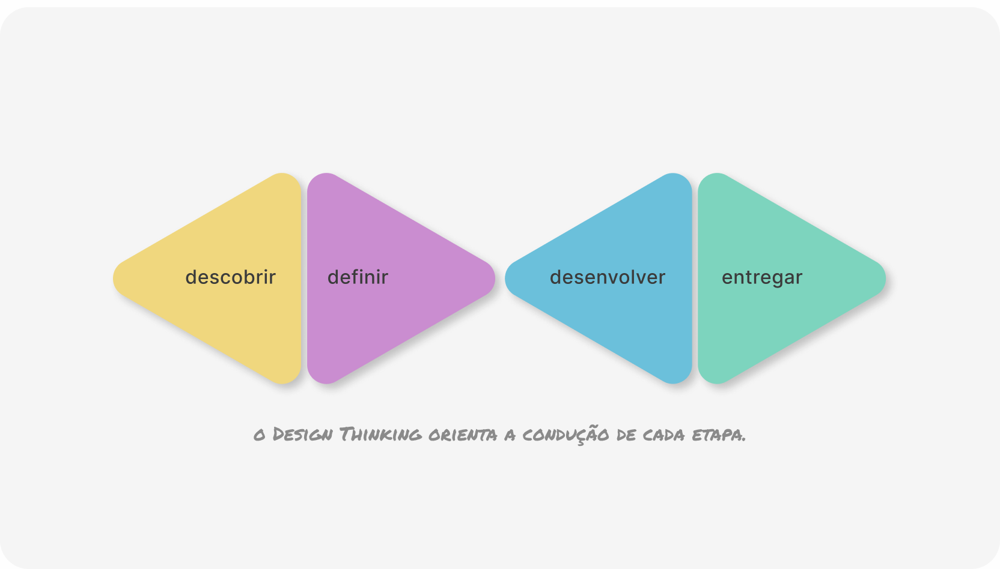
Foi feita a compreensão do problema antes de propor qualquer solução, por meio de pesquisas e da aproximação com os usuários, foram identificadas suas necessidades, dificuldades e comportamentos, evitando que as decisões fossem baseadas apenas em suposições. Entendi o problema antes de propor soluções, aproximando-me dos usuários pra não decidir com base em suposições.
Desk Research
A pesquisa bibliográfica sobre Libras, comunidade surda, aprendizagem visual-espacial e gamificação foi essencial para compreender a estrutura da língua antes de projetar. Quatro achados principais guiaram o projeto: Libras é visual-espacial; aprender exige repetição e contexto; a gamificação deve apoiar objetivos pedagógicos; e os sinais precisam seguir critérios claros de padronização. A pesquisa bibliográfica revelou: LIBRAS é visual-espacial, exige repetição, e a gamificação deve apoiar a pedagogia.
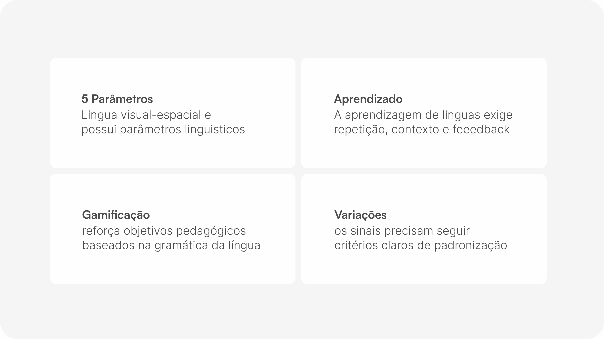
Pesquisas
Foram desenvolvidas duas pesquisas remotas via formulário: uma com estudantes para entender suas necessidades e barreiras no aprendizado de LIBRAS, e outra com professores para mapear desafios de ensino e oportunidades de aprimorar o processo de aprendizagem. Duas pesquisas remotas: estudantes sobre barreiras, professores sobre desafios de ensino.
Formulário com estudantes
50 respostas coletadas, sendo 37 válidas. As 13 desconsideradas eram de pessoas sem contato com LIBRAS, fora do escopo da pesquisa, que buscava entender as barreiras de quem já tentou aprender. 50 respostas, 37 válidas: as demais eram de pessoas sem contato com LIBRAS, fora do escopo da pesquisa.
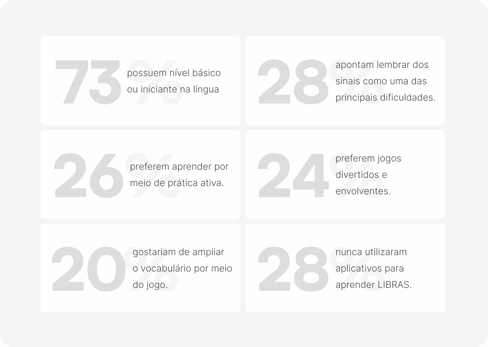
Formulário com professores
10 professores. 10 respostas válidas. Os dados reforçaram o que os estudantes já tinham apontado e trouxeram a perspectiva de quem observa o problema de fora. 10 professores, 10 respostas válidas, reforçando o que os estudantes já apontaram.
Principais dificuldades dos alunos segundo os professores
Lembrar os sinais, aprender sozinho por falta de alguém para praticar, manter constância nos estudos e encontrar materiais visuais claros e confiáveis. Lembrar sinais, praticar sozinho, manter constância e achar materiais visuais confiáveis.
O que mais ajuda no aprendizado
Jogos com desafios e recompensas, prática ativa com repetição e exercícios, e vídeos com demonstrações dos sinais. Jogos com desafios, prática ativa e vídeos com demonstrações dos sinais.
Problema nos materiais didáticos existentes
Sinais mal ilustrados ou confusos e falta de clareza no movimento das mãos.
Personas
Três personas foram construídas a partir dos dados da pesquisa, representando diferentes motivações para aprender Libras. Isso permitiu considerar expectativas e objetivos distintos, garantindo que a solução atendesse a diferentes perfis de usuários. Três personas foram construídas a partir da pesquisa, cobrindo diferentes motivações e perfis de usuário.
Persona 1
![Ana Silva, 18–24 anos, iniciante em Libras, aprende por vídeos na internet por curiosidade/hobby. Citação: “Tenho curiosidade em aprender Libras, mas só continuo quando o conteúdo é rápido, visual e fácil de entender.” Objetivos: aprender sinais, ampliar o vocabulário e entender os movimentos das mãos. Dificuldades: memorização, compreensão dos movimentos e encontrar materiais claros e confiáveis. Comportamento: prefere jogos simples e visualmente agradáveis, desiste de experiências lentas, confusas ou pouco envolventes.](../assets/images/cs-di-persona-1.png)
Persona 2
![Bruno Ferreira, 18–24 anos, nível básico em Libras, aprende na escola/faculdade por obrigatoriedade. Citação: “Aprendo Libras porque é uma exigência do curso, então o jogo precisa tornar essa obrigação mais leve e motivadora.” Objetivo: ampliar o vocabulário, ganhar confiança e consolidar o aprendizado da disciplina. Dificuldades: memorizar os sinais e manter a constância. Comportamento: prefere demonstrações visuais e prática ativa, engaja com recompensas e sensação de progresso e desiste de experiências confusas ou pouco envolventes.](../assets/images/cs-di-persona-2.png)
Persona 3
![Mariana Costa, 25–34 anos, iniciante em Libras, aprende com amigos e familiares por inclusão social. Citação: “Quero aprender Libras para me comunicar melhor com pessoas próximas, mas preciso de algo leve, visual e útil no dia a dia.” Objetivo: aprender sinais, entender a estrutura da Libras e conhecer a cultura e a comunidade surda. Dificuldades: memorizar, diferenciar sinais semelhantes e praticar sem alguém para acompanhar. Comportamento: prefere vídeos e situações contextualizadas, engaja com experiências visuais, simples e envolventes e desiste de jogos longos, complexos ou pouco interessantes.](../assets/images/cs-di-persona-3.png)
Os dados coletados na descoberta são analisados e organizados para identificar os principais problemas e oportunidades. Esse processo transforma informações dispersas em um direcionamento claro, garantindo que a solução responda às necessidades mais relevantes dos usuários. Os dados da descoberta foram organizados pra identificar os principais problemas e direcionar a solução.
JTBD - Jobs To Be Done
Ferramenta usada para entender o que os usuários buscam ao aprender Libras. Foram identificados três perfis: aprender do zero de forma estruturada, manter a constância e revisar o conteúdo aprendido. Entender esses objetivos evita criar funcionalidades que não atendem às necessidades reais. Identifiquei três perfis de usuário: aprender do zero, manter constância e revisar conteúdo.
![Persona: aprendiz iniciante motivado por inclusão, quer aprender Libras do zero, mas não sabe por onde começar, tem medo de errar e busca um aprendizado leve e significativo que se adapte à sua rotina. Job Funcional: aprender e consolidar conhecimentos básicos de LIBRAS de forma estruturada e progressiva. Dor/Problema: conteúdos dispersos, dificuldade em manter a constância, medo de errar e um aprendizado tradicional pouco engajador. Job Social: posicionar-se como uma pessoa inclusiva e preparada para interações básicas com pessoas surdas. Solução/Resultado Funcional: aplicativo gamificado, progressão por níveis, microlições, feedbacks construtivos e aprendizado contextualizado. Job Emocional: sentir-se capaz e seguro durante o processo de aprendizagem. Proposta de Valor Chave: oferecer uma experiência contextualizada e envolvente de aprendizagem de LIBRAS que permita ao usuário evoluir com segurança, constância e propósito inclusivo.](../assets/images/cs-di-jtbd-grid.png)
5W2H
Estruturou o problema em sete perguntas, revelando um contexto de adultos ouvintes iniciantes que estudam pelo celular em momentos curtos, sem estímulos regulares para manter o hábito. Essa análise garantiu uma compreensão completa do problema antes da ideação. Revelou um público de adultos ouvintes iniciantes que estudam pelo celular, em momentos curtos e sem estímulo regular.
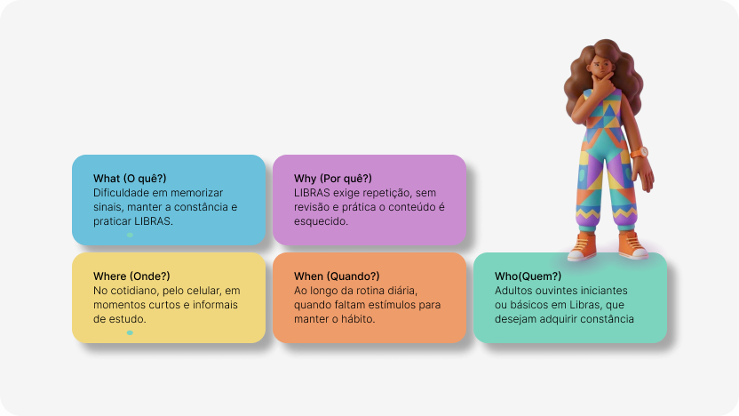
HMW - How Might We
Os problemas identificados foram transformados em três perguntas abertas que guiaram a ideação. A técnica HMW transforma desafios em oportunidades, direcionando o projeto para possibilidades de solução. Os problemas viraram três perguntas abertas (HMW) que guiaram a ideação de soluções.
Como poderíamos apoiar pessoas ouvintes iniciantes em LIBRAS a manter a constância nos estudos, mesmo dispondo de curtos períodos de tempo?
Essa pergunta, focada em manter a constância com pouco tempo, revelou a necessidade de sessões curtas, notificações personalizáveis e um personagem que incentive a atenção diária, com penalidades leves para motivar sem frustrar. Revelou a necessidade de sessões curtas, notificações e um personagem que incentive a constância diária.
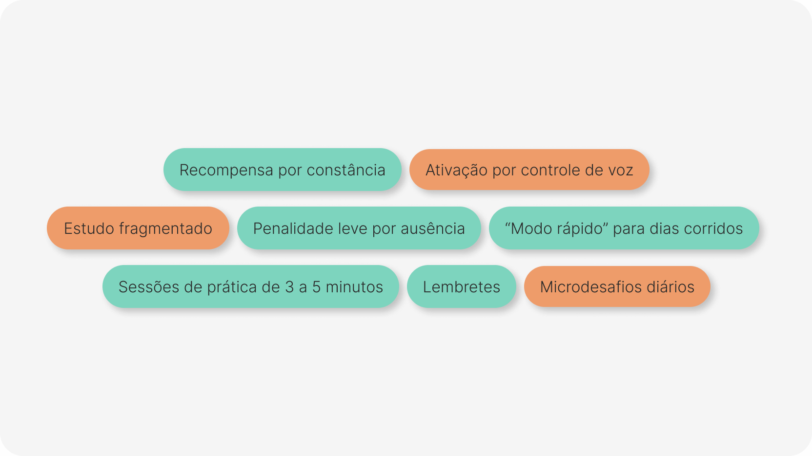
Como poderíamos apoiar a prática recorrente de sinais já estudados, reduzindo o esquecimento e o tempo gasto para retomar conteúdos?
Essa pergunta, focada em prática complementar, revelou a necessidade de sessões curtas, notificações personalizáveis e um personagem que incentive a prática diária, com penalidades leves para motivar sem frustrar. Revelou a necessidade de sessões curtas, notificações e um personagem que incentive a prática diária.
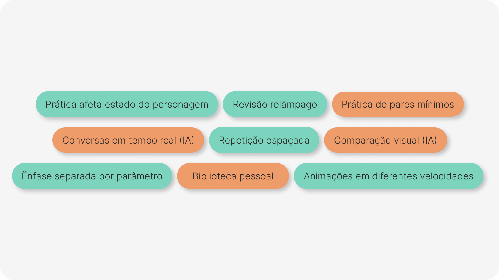
Como poderíamos apoiar a motivação dos usuários durante o processo de aprendizagem de LIBRAS, evitando o abandono mesmo quando o progresso é gradual?
Essa pergunta, focada em motivação e engajamento, revelou a necessidade de recompensas visíveis, conquistas e evolução do personagem que valorizem o progresso, mesmo em pequenas interações. Revelou a necessidade de recompensas visíveis e evolução do personagem que valorizem o progresso.
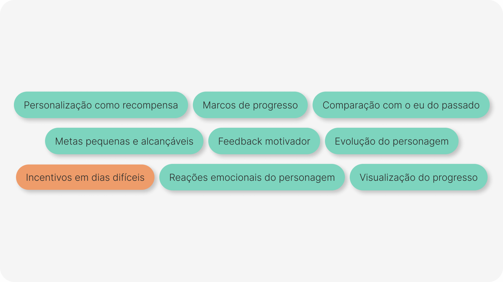
Algumas ideias foram descartadas nessa etapa por complexidade técnica ou risco de sobrecarga cognitiva, mas ficaram registradas para versões futuras. Algumas ideias foram descartadas por complexidade técnica, mas ficaram registradas pra versões futuras.
As oportunidades identificadas foram transformadas em ideias e soluções, exploradas e refinadas com foco na experiência do usuário. As oportunidades viraram ideias e soluções, exploradas com foco na experiência do usuário.
Análise de similares
Foram analisados dois grupos: apps de ensino de idiomas e jogos de simulação de cuidado, cada um contribuindo com elementos para a solução. A análise de jogos de cuidado foi essencial porque o desafio era também manter o engajamento e a constância, não apenas ensinar o conteúdo. Analisei apps de idiomas e jogos de cuidado virtual, estes ajudaram a manter engajamento e constância.
![Tabela de análise de similares. Duolingo: ensino de idiomas, sistema de níveis/recompensas/desafios, interatividade alta, ícones/animações/feedback visual, estrutura de progressão e motivação. Hand Talk: ensino e tradução em LIBRAS, trilhas estruturadas e atividades, interatividade média, avatar 3D tradutor de sinais, organização do aprendizado em módulos. Loodus: interação educacional, mecânica simples de recompensa, interatividade média, personagem interativo, mecânica de solicitação ao usuário. Tamagotchi: simulação de cuidado virtual, sistema de responsabilidade e evolução, interatividade média, personagem interativo, mecânica de cuidado e responsabilidade. Pou: jogo casual de cuidado virtual, recompensas e atividades, interatividade alta, personagem simples e interativo, mecânica de cuidado e responsabilidade. The Sims: simulação de vida, progressão e gerenciamento de necessidades, interatividade alta, ambiente e personagens simulados, sistema de evolução e responsabilidade.](../assets/images/cs-di-compare-table.png)
Sketch
Primeiros esboços da mecânica e dos fluxos principais. O conceito do jogo de cuidado com três ambientes (quarto, cozinha e sala) começou a tomar forma. Os esboços permitiram explorar ideias rapidamente antes de construir as telas. Primeiros esboços da mecânica: um jogo de cuidado com três ambientes (quarto, cozinha, sala).
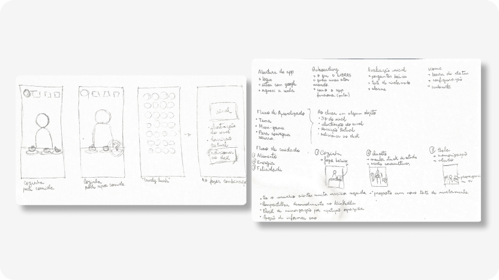
Flowchart
Foi criado um fluxograma com todas as funcionalidades previstas. Após analisar o tempo disponível, o escopo foi reduzido e um segundo fluxo foi criado, focado no onboarding e suas interações. O primeiro definiu o escopo e as prioridades; o segundo detalhou a funcionalidade desenvolvida no TCC e orientou as próximas etapas. Um fluxograma mapeou todas as funcionalidades; com o escopo reduzido, um segundo focou só no onboarding.
Flowchart de todo o sistema
Ver fluxogramaFlowchart do onboarding
Ver fluxogramaMatriz de Eisenhower
Com o escopo maior que o tempo disponível, a Matriz de Eisenhower organizou as funcionalidades por urgência e importância. O onboarding foi priorizado por permitir compreender a lógica do jogo como um todo, enquanto ranking, pagamentos e correção por IA ficaram para versões futuras. A categorização considerou o que era essencial para essa compreensão dentro do prazo disponível. A Matriz de Eisenhower priorizou o onboarding, ranking, pagamentos e correção por IA ficaram pra depois.
![Matriz de Eisenhower. Importante e urgente: Login, Avaliação Inicial, Definir Rotina de Estudo, Introdução ao Onboarding, Onboarding da Quarto, Onboarding da Cozinha, Onboarding da Sala, Encerramento do Onboarding. Importante e não urgente: Cadastro, Permissões de Uso, Tela de Abertura (Splash), Configurações Gerais, Feedback e Acompanhamento, Animação real de sinais de LIBRAS. Não importante e urgente: Configurações de acessibilidade, Notificações push, Mini-jogo totalmente funcional, Funcionamento do sistema premium, Execução real de exercícios de LIBRAS. Não importante e não urgente: Ranking entre usuários, Sistema de pagamento, Modo demo (visitante), Modo escuro.](../assets/images/cs-di-eisenhower-matrix.png)
Crazy 8
Foi utilizado para explorar rapidamente diferentes soluções para a mesma necessidade, gerando oito ideias em poucos minutos. A técnica amplia as possibilidades e evita a fixação na primeira solução, permitindo comparar alternativas antes de definir o caminho a seguir. Gerei oito ideias em poucos minutos pra explorar soluções sem fixar na primeira.
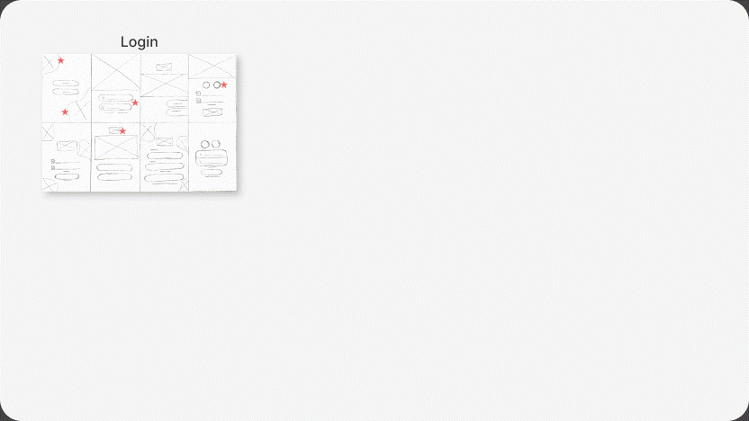
Wireframes
Os sketches do Crazy 8 foram evoluídos para wireframes de média fidelidade, validando os fluxos e a estrutura das telas antes da identidade visual. Separar experiência e estética permitiu focar primeiro na solução do problema. Os sketches viraram wireframes de média fidelidade, validando fluxos antes da identidade visual.
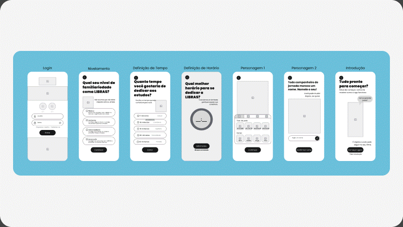
Antes dos wireframes de alta fidelidade, foram definidas as decisões estéticas: nome, cores, tipografia e tom de voz. Essa base garantiu consistência visual antes da construção das telas. Antes da alta fidelidade, defini nome, cores, tipografia e tom de voz, base pra consistência visual.
Direção visual e identidade
Tom de voz
Em um aplicativo educacional, a comunicação influencia a percepção sobre erros e progressos, reduzindo frustrações e incentivando a continuidade dos estudos, por isso o tom foi definido como acolhedor, encorajador, respeitoso e acessível, criando uma experiência mais confortável e motivadora. O tom foi definido como acolhedor, encorajador e acessível, pra reduzir frustração e incentivar continuidade.
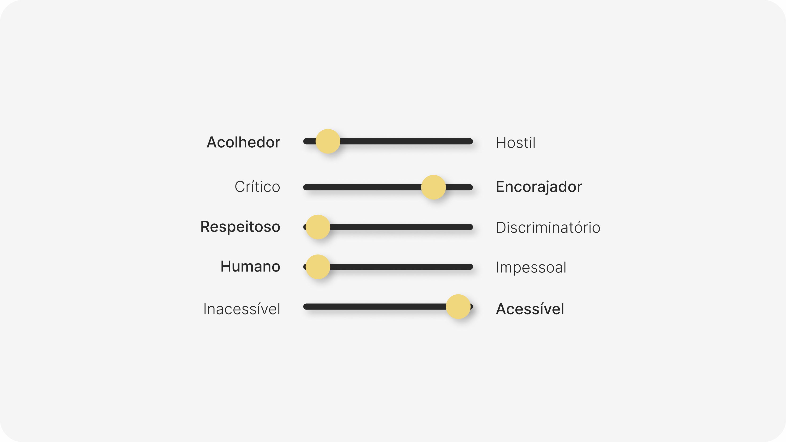
Nome
O nome Nina vem de “ninar”, que carrega cuidado e acolhimento, e também é um nome pessoal, reforçando que existe um personagem real para cuidar. O vínculo afetivo com o personagem sustenta o engajamento. O nome contribui para tornar esse vínculo mais humano desde o primeiro contato. Nina vem de "ninar" (cuidado e acolhimento), reforçando o vínculo afetivo com o personagem.
Cores com nomes semânticos
Orgulho e Respeito representam a comunidade surda; Felicidade, Energia e Alimentação, os estados do personagem; Erro, Contraste e Legibilidade, as funções. Os tokens foram nomeados por intenção, permitindo que seus nomes continuem fazendo sentido mesmo com mudanças na paleta. Cores nomeadas por intenção, não aparência, continuam fazendo sentido se a paleta mudar.
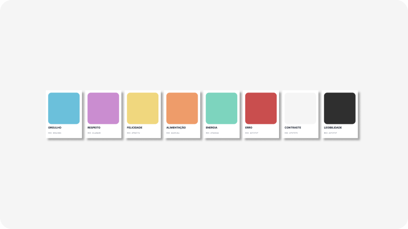
Tipografia
A família Poppins foi escolhida pela construção geométrica e bordas arredondadas, que garantem legibilidade e transmitem leveza. Uma única família tipográfica também simplifica a implementação e mantém a consistência visual do produto. Poppins foi escolhida pela construção geométrica e bordas arredondadas, que garantem legibilidade e leveza.
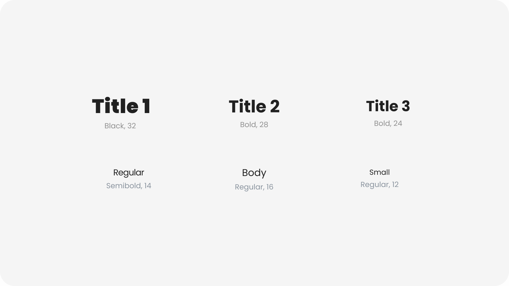
Logotipo
O logotipo combina Manrope personalizada e Poppins, criando uma identidade legível, amigável e acolhedora, com o primeiro “N” estilizado para representar o movimento das mãos na comunicação em Libras. O logotipo combina Manrope e Poppins, com o "N" estilizado representando o movimento das mãos em LIBRAS.
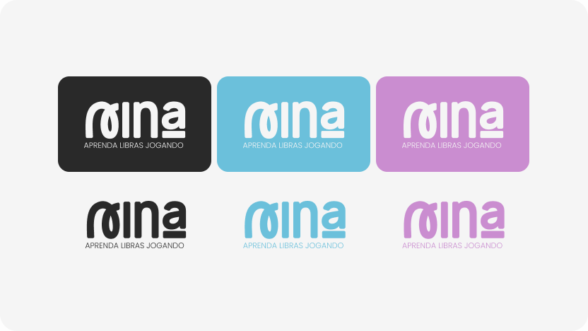
Biblioteca de componentes variáveis e estilos
Foi criada uma biblioteca de componentes e variáveis no Figma. Ela estabelece padrões visuais, garante consistência e cria uma base para a evolução futura do design system. Uma biblioteca de componentes no Figma garante consistência e base pra evolução do design system.
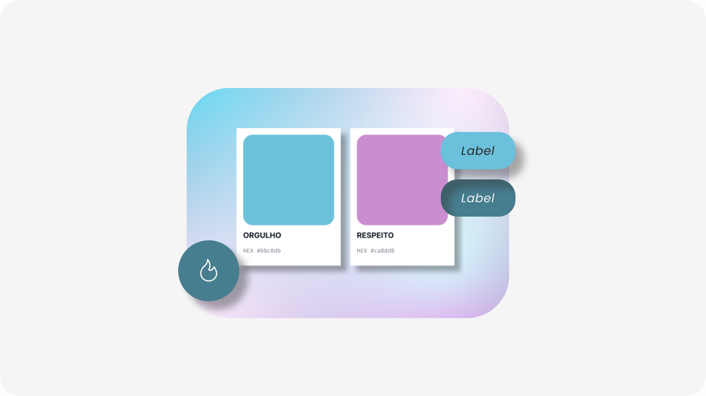
Personagem
O personagem foi desenvolvido em estilo Flat 3D, combinando simplicidade e profundidade para criar uma aparência amigável. Suas mãos possuem proporções maiores para facilitar a visualização dos sinais e reforçar seu papel pedagógico. O avatar pode ser parcialmente personalizado, aumentando a identificação e o engajamento, com restrições no rosto para preservar as expressões faciais, fundamentais para a comunicação em LIBRAS. A Nina tem estilo Flat 3D, mãos maiores pra destacar os sinais, e personalização parcial preservando as expressões faciais.
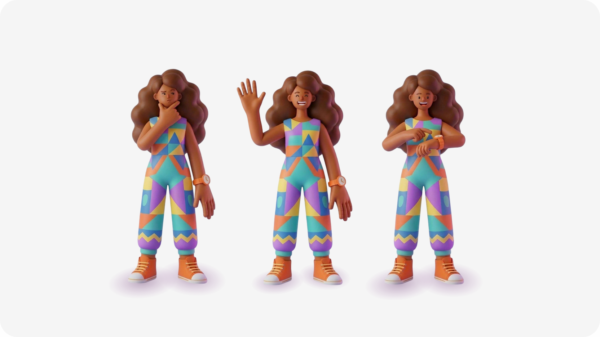
Com os aprendizados da pesquisa como base, as principais decisões do projeto ganharam forma em um protótipo interativo do onboarding. Aqui, a Nina deixa de ser apenas uma ideia e se transforma em uma experiência gamificada para o aprendizado de LIBRAS. As decisões do projeto ganharam forma num protótipo interativo, a Nina vira uma experiência gamificada real.
Wireframes de alta fidelidade
Com os wireframes de alta fidelidade, foi criado um protótipo interativo que simula a navegação do aplicativo. O fluxo vai da abertura ao fim do onboarding, quando o usuário conhece a Nina, entende o jogo e configura sua rotina de estudos. O protótipo simula a navegação completa do onboarding, do login até a configuração da rotina de estudos.
Comparação
A comparação entre os sketches do Crazy 8, os wireframes de média fidelidade e os wireframes de alta fidelidade evidencia a evolução gradual da tela de login, desde a exploração inicial de ideias até sua consolidação visual. A evolução da tela de login, do sketch ao wireframe final, mostra a consolidação visual do projeto.
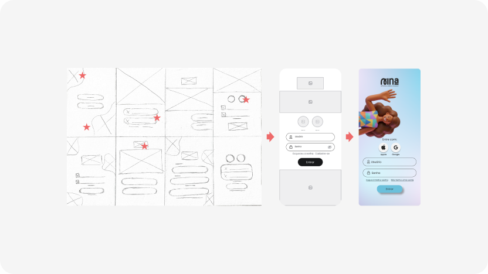
Nesta etapa, as interfaces foram refinadas para representar o mais fielmente possível o resultado final do aplicativo. O protótipo do onboarding demonstra o funcionamento do jogo e permite avaliar a experiência completa do usuário. As interfaces foram refinadas pra representar fielmente o resultado final e avaliar a experiência completa.
Testes com usuários reais
Validar usabilidade, compreensão da mecânica e aceitação da proposta com pessoas ouvintes interessadas em aprender LIBRAS. Validar usabilidade e aceitação com pessoas ouvintes interessadas em aprender LIBRAS.
Validação com a comunidade surda
Garantir que a representação da língua e da cultura surda no app seja adequada e respeitosa. Professores de LIBRAS precisam fazer parte desse processo. Garantir que a língua e cultura surda estejam bem representadas, com professores no processo.
Expandir o protótipo
Desenvolver os fluxos além do onboarding: minigames completos, trilha de conhecimento, baralho de memorização e sistema de animações dos sinais. Minigames, trilha de conhecimento, cartas de memorização e animações dos sinais.
Refinar com base nos testes
Ajustar fluxos, mecânicas e conteúdos a partir dos testes. A hipótese inicial é que o excesso de elementos e informações pode gerar sobrecarga cognitiva e reduzir o foco no personagem. Ajustar fluxos e conteúdos com base nos testes de usabilidade.
Garantir a acessibilidade
Aplicação das diretrizes WCAG, ajustes tipográficos para baixa visão e estruturação técnica da interface.
O processo pode levar a lugares inesperados
O projeto começou sem definir se a solução seria física ou digital, apenas com o objetivo de contribuir para o aprendizado de LIBRAS. A solução final surgiu ao longo do processo de pesquisa e design, e não de uma ideia pré-definida. O projeto não definiu de início se seria físico ou digital, a solução surgiu ao longo do processo.
Pesquisa é de extrema importância
As cartas de revisão não faziam parte do plano inicial. Surgiram a partir da pesquisa, que identificou a memorização como um dos principais obstáculos ao aprendizado. Sem esses dados, essa decisão provavelmente não teria sido tomada. As cartas de revisão vieram da pesquisa, que apontou a memorização como obstáculo.
Hipóteses precisam ser testadas
Tudo que foi construído aqui é hipótese, com base em dados. O próximo passo mais importante é testar com usuários reais e descobrir o que não funciona. Tudo aqui é hipótese com base em dados, o próximo passo é testar com usuários reais.
Obrigada por ler até aqui :)